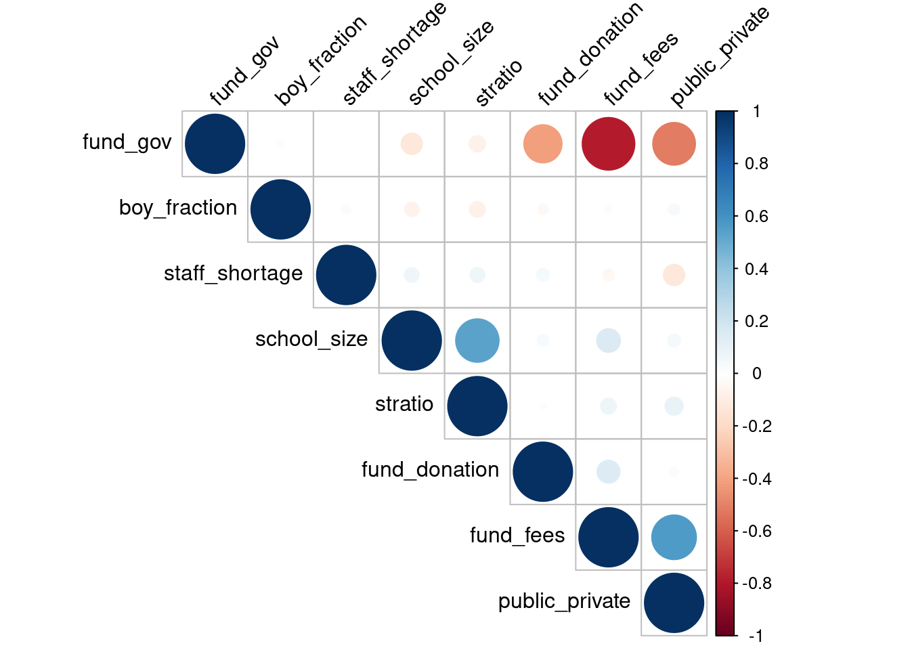
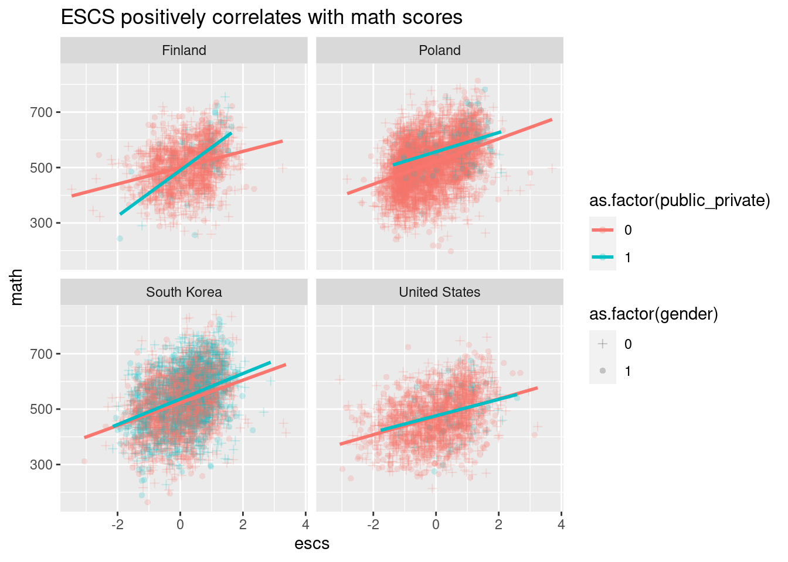
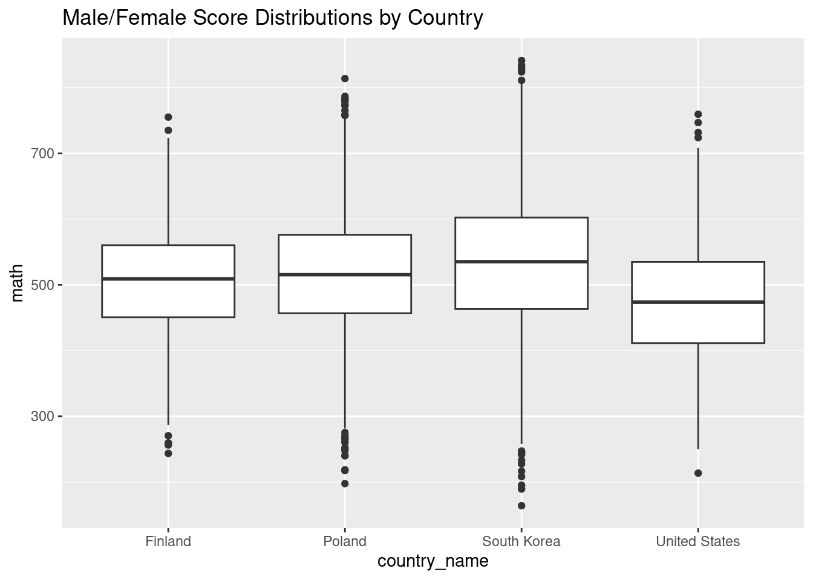
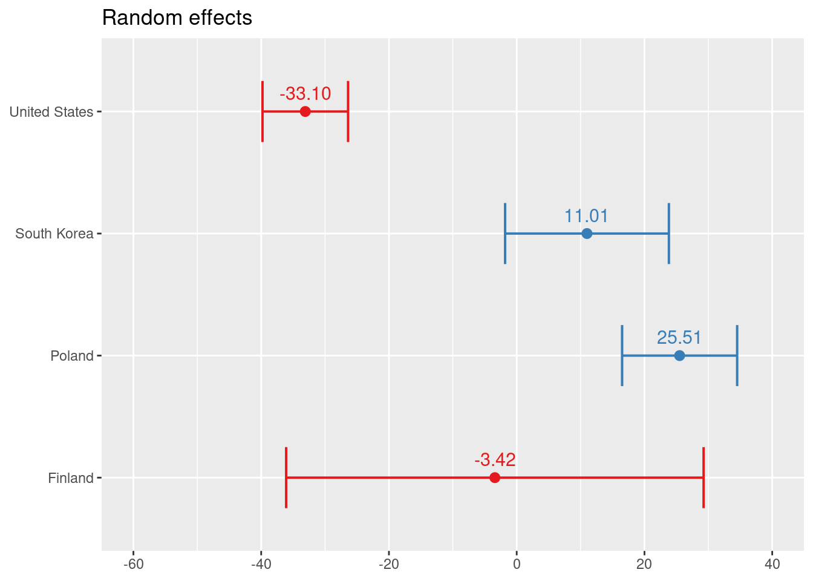
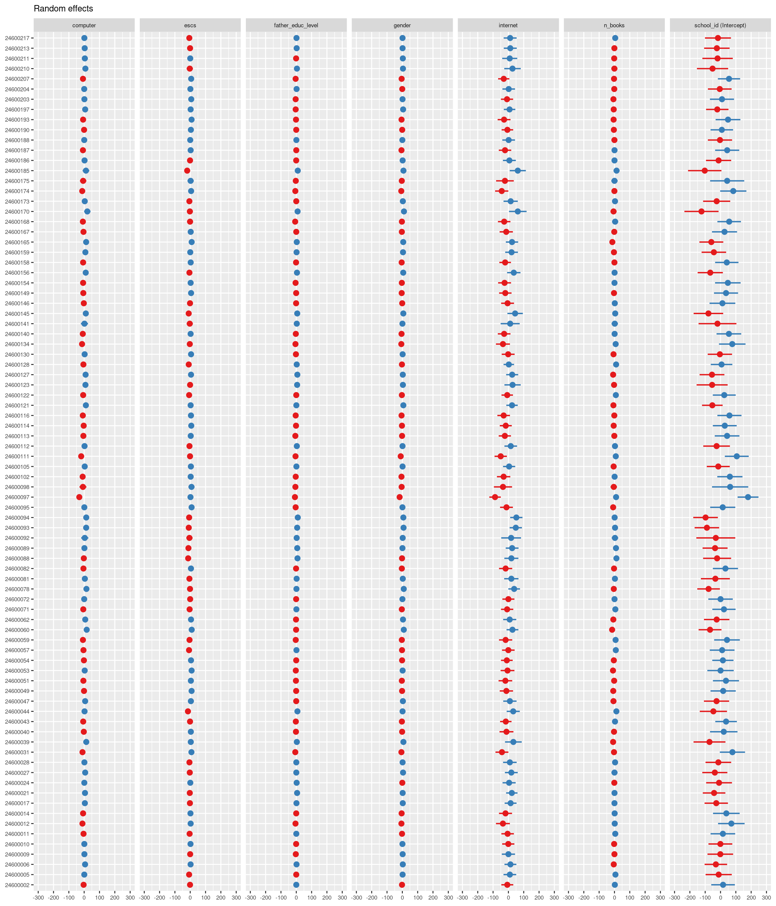

Review and analysis of Amanda Ripley’s “The Smartest Kids in the World and how they got that way”.
Amanda Ripley’s The Smartest Kids in the World and how they got that way
If you are interested in the American education system or simply wondering if there is a secret sauce to making someone smart, then this book will be a fun read.
Having grown up in multiple countries (Canada, India, Kenya as well as USA), I’ve often wondered about the many differences in education systems globally. The more I read, I realized the anecdotal observations agreed with my personal experiences in American and non-American school systems. The book highlighted certain key features that paved the way for countries like Finland, South Korea, Poland and Singapore to improve their education outcomes - all while United States lags behind.
Given that the book shared perspectives of a handful of American foreign exchange students, I wanted to see if the claims were simply a cherry picked points or if they are backed by statistics. So here is my review and analysis of their conclusions. See Section 6 to skip to the book findings.
(Apparently the book has also been turned into a documentary which I’m definitely planning to check out once I figure out how to stream it! But the analysis was interesting in the meantime…)
How did Ripley quantify “smart”?
The book used data from The PISA test which is an international standardized test that assesses 15 year old student’s reading, math and science. Furthermore, it surveys their demographic backgrounds and intangible features such as attitudes towards schooling.
Luckily some of this data is available in an r package learningtower. So I wanted to dive into the data and try some mixed effects modeling 😀
One caveat is that this dataset didn’t dive into the more intangible aspects such as student attitudes and drive. But we can still look at demographic and socioeconomic factors contributing to academic success.
Code
library(tidyverse)library(tidymodels)library(learningtower)library(plotly)library(Hmisc)library(corrplot)library(lmtest)library(sandwich)library(lme4)library(sjPlot)library(kableExtra)library(car)library(gridExtra)all_student <-load_student("all")data("school")data("countrycode")school_student <-left_join( all_student, school, by =c("school_id", "country", "year")) %>%left_join( countrycode,by ="country" )# Selecting a few countries countries <-c("Brazil", "South Korea", "Japan", "United States","Canada", "Singapore", "Malaysia", "Finland", "Denmark", "Peru","Poland", "Germany")
Exploring the data
Here are the average PISA scores (with 1 standard deviation error bars) for countries with mostly complete datasets across multiple years. Finland and South Korea are definitely among top performers while Poland is in the upper half.
For simplicity, let’s start with a linear model to explore the effect of each predictor
How does a student score high?
Focusing on the math dataset for year 2018, first I cleaned up some of the variables.
At the individual student level, we have the following predictors: mother_educ, father_educ, gender, computer, internet, desk, room, television, car, book, wealth, escs. At the school level, we see the variables fund_gov, fund_fees, fund_donation, enrol_boys, enrol_girls, stratio, public_private, staff_shortage, sch_wgt, school_size.
Some data wrangling:
Convert ordered categorical variables such as number of books and mother/father education levels to numerical values for ease of modeling and interpretation
Convert television, car and computer to binary values to indicate whether or not they were accessible rather than retaining the number of each that was available
Code
math_df <- school_student %>%filter(!is.na(math) & year ==2018) %>%mutate(television =as.character(television), computer =as.character(computer),car =as.character(car)) %>%mutate(television =ifelse(television %in%c("1", "2", "3+"), "yes", television)) %>%mutate(car =ifelse(car %in%c("1", "2", "3+"), "yes", car)) %>%mutate(computer =ifelse(((is.na(computer)) & (computer_n %in%c("1", "2", "3+"))), "yes", computer)) %>%mutate(n_books =case_when( book =="0-10"~0, book =="11-25"~1, book =="26-100"~2, book =="201-500"~3, book =="more than 500"~4 ),mother_educ_level =case_when( mother_educ =="less than ISCED1"~0, mother_educ =="ISCED 1"~1, mother_educ =="ISCED 2"~2, mother_educ =="ISCED 3A"~3, mother_educ =="ISCED 3B, C"~3, ),father_educ_level =case_when( father_educ =="less than ISCED1"~0, father_educ =="ISCED 1"~1, father_educ =="ISCED 2"~2, father_educ =="ISCED 3A"~3, father_educ =="ISCED 3B, C"~3, ) )
Here are two simple linear models. The first exclusively looks at student level predictors and the second includes school level predictors. We see that all of these student level (first model) and school level (second model) variables may be predictive of a student’s math scores. Interestingly, the added complexity with the second model is preferred because the AIC is lower.
Note: Due to missing values, only a complete dataset of 47% was used in the linear model.
The above models treat students from all groups i.e. school and country as identical. We can improve on this by adding design based methods to account for the groupings. This is necessary because the t-statistic currently assumes a standard error based on n of total students irrespective of school or country. When we cluster by school and country, n within each group is smaller. Here are the adjusted p-values using a cluster-robust model.
After applying the inference adjustments for correlated errors within clusters, we see that father’s education level affects test scores while mother’s education does not. It’s possibly that there is some correlation between these variables.
Gender does seem predictive of the score. If all other factors are equal, a boy would score 7.4 points higher in math than a girl (when we only account for individual predictors)!
Presence of computer, internet and desk as well as more books lead to higher scores. TV also seems to have an impact albeit less significant. Having a separate room is not significant predictors of score.
Oddly, wealth is negatively predictive but not a significantly meaningful predictor of score. In contrast, escs or index of economic, social and cultural status is a strong predictor of score. One unit increase in escs leads to 16.44 points increase in math scores with all other factors being equal for the individual variables model.
It seems counter intuitive that wealth is inversely correlated with score per the model and also not meaningful! We expect that poverty generally correlates with poorer education outcomes. Perhaps collinearity and interactions between predictors masks the individual effects seen here. Indeed, wealth is correlated with escs as seen below
The correlation plot above shows that there is a risk of multicollinearity since all variables are related. Here is the evaluation of variance inflation. It shows that escs and wealth have high variance inflation factors (VIFs).
Code
car::vif(lmod)
mother_educ_level father_educ_level gender computer
1.691089 1.649123 1.005247 1.447836
internet desk room television
1.424581 1.167456 1.123837 1.047353
car n_books wealth escs
1.453686 1.382972 2.810157 3.543222
How does a school score high on average?
A simple linear model here shows that most of these may be predictive of better school outcomes.
We again apply grouping based correlated error adjustments to our model as seen above for the country level groups.
There is a nearly collinear relationship in funding sources where fund_fees + fund_donation + fund_gov = 100 unless there is a another nonspecific funding source. This explains why fund_fees is a non-significant predictor. Interestingly, fund_gov is also non-significant since this is likely related to public/private designation.
With all other factors being equal, a public school is 38.43 points lower than a private school for math scores.
Schools with more students have higher average math scores. But as expected, higher student to teacher ratio inversely correlates with score as expected.
More boys attending the school seems to proportionally lower math scores for the school! This seems to go against the individual score model where boys seemed to score higher on the test.
Higher staff shortage in the school negatively influences the school’s scores but not significantly.
Note: Due to missing values, only a complete dataset of 60% was used in the linear model.
We also see some risk of predictor correlations here particularly with respect to funding source and public/private status of school. Additionally, school size is positively correlated to student-teacher ratio.
Code
s_cor_df <- school_df %>%mutate(public_private =ifelse(public_private =="public", 0.0, 1.0)) %>%select(-school_id, -math, -country_name) %>%mutate(across(fund_gov:boy_fraction, as.double))res <-cor(s_cor_df, use ="complete.obs", method="spearman") corrplot(res, type ="upper", order ="hclust", tl.col ="black", tl.srt =45)

Mixed Effects Model
A mixed effects model should be more appropriate here over a simple linear model or a model with design adjustments for these reasons:
We have hierarchical data (student within a school within a country). Clearly there is student-to-student variability based on the various indicators recorded in this data set. But we also see that groupings play an effect.
The design based linear model did not offer insight into how schools and countries differ. It’s possible that the variability in students may also be accounted for by school-to-school variability and country-to-country variability. We want to know how these grouping variables affect student as well as school-averaged scores.
The book described the socioeconomic factors for different countries that impacted their approach to education. So we expect these to affect our analysis.
For simplicity, I will look at the countries mentioned in the book (USA, South Korea, Poland and Finland) in the year of 2018.
Since there are correlations in some of the predictors mother_education_level and wealth were removed as predictors. Similarly for lack of interest desk, room, television and car were also excluded. At the school level, we remove fund_gov since it correlates with public/private designation and fund_fees since it is likely collinear and non-significant in the adjusted linear model.
Although, the predictors are correlated, we will lose interpretability by applying dimensionality reduction techniques such as PCA. Hence the above approach is ideal.
If we group schools into public or private so that each country has 2 school levels (1 = private and 0 = public), we see that the classes are vastly imbalanced. More public school data available.
escs and gender are interesting to model and likely correlate with other student level variables.
Code
ggplot(sub_math_df, aes(x = escs, y = math, color =as.factor(public_private))) +facet_wrap(~country_name) +geom_point(alpha =0.2, aes(shape =as.factor(gender))) +scale_shape_manual(values =c(3, 16)) +geom_smooth(method ="lm", se=FALSE) +ggtitle("ESCS positively correlates with math scores")

With the exception of Finland, we see overlap in public/private groupings. So this may not be an effective grouping strategy.
Code
ggplot(sub_math_df, aes(x = country_name, y = math, color = gender)) +geom_boxplot() +ggtitle("Male/Female Score Distributions by Country")

Students in Schools in a Country: 3 Level Model
Here is a hierarchical model with intercepts varying by countries and by grouping of schools within countries. We are assuming that each predictor influences schools and countries in the same way with identical slopes but random intercepts only for the random effects.
As expected access to a computer, internet, more books and high socioeconomic status are positively predictive. Father’s education is also positively predictive albeit low p-value and smaller effect size.
Looking at the random effects, private schools perform better than public school with greatest disparity seen in Poland. Controlling for other factors and looking at the “country” random effect, Poland and South Korea perform better than Finland. This is surprising because overall South Korea and Finland had higher average scores than Poland. Perhaps Poland’s lower scores are explained by other predictors such as socioeconomic indicators that are accounted for in the model.
Individual School Groupings
Here is the mixed effects model grouping by schools within country. Although we are not interested in how individual schools perform, it is nice to understand the variability by school versus countries. We fit two models where the first looks at individual predictors only and the second also includes school level predictors.
As seen before, all the predictors remain significant with positive relationship to scores. Access to a computer, internet, more books and high socioeconomic status are positively predictive . Father’s education level is also predictive of higher individual scores.
Interestingly, ICC or intra-class correlation coefficient is 0 in both of these models. This implies that the proportion of variance explained by the grouping structure (schools within a country) is 0 suggesting that a mixed effects model in this case may not be necessary.
A comparison of these model deviances shows that the difference is indeed significant:
Inter-school variability is pronounced in United States and South Korea.
There is a large variability at the country level in Finland unlike USA, South Korea and Poland. Its unclear what accounts for this diversity within the country. However scores across schools are more consistent.
Poland performs best in terms of the random effect intercept. This is surprising since South Korea and Finland had higher average math scores than Poland. Poland’s lower average scores are likely explained by other predictors such as socioeconomic indicators that are accounted for in the model.
Going back to the fact that the model ICC = 0, let’s consider adding random slopes to see if there may be additional differences we are not seeing.
Linear mixed model fit by maximum likelihood ['lmerMod']
Formula:
math ~ gender + internet + n_books + escs + stratio + public_private +
(escs | country_name) + (1 | country_name:school_id)
Data: sub_math_df
Weights: stu_wgt
Control: lmerControl(optimizer = "bobyqa", optCtrl = list(maxfun = 50000))
AIC BIC logLik deviance df.resid
143772.7 143861.0 -71874.4 143748.7 11569
Scaled residuals:
Min 1Q Median 3Q Max
-10.286 -0.395 0.023 0.422 7.479
Random effects:
Groups Name Variance Std.Dev. Corr
country_name:school_id (Intercept) 714.33 26.727
country_name (Intercept) 288.42 16.983
escs 21.56 4.643 1.00
Residual 939216.18 969.132
Number of obs: 11581, groups: country_name:school_id, 545; country_name, 4
Fixed effects:
Estimate Std. Error t value
(Intercept) 481.9614 9.9364 48.505
gender -9.0031 1.4935 -6.028
internet 28.0830 4.6232 6.074
n_books 17.8310 0.7687 23.195
escs 18.8921 2.6136 7.229
stratio 1.0562 0.3765 2.806
public_private 19.0753 4.8979 3.895
Correlation of Fixed Effects:
(Intr) gender intrnt n_boks escs strati
gender -0.076
internet -0.458 0.008
n_books 0.000 -0.037 0.023
escs 0.809 0.009 -0.059 -0.196
stratio -0.040 -0.012 0.027 0.017 0.078
public_prvt -0.073 0.012 0.001 -0.024 -0.018 0.097
optimizer (bobyqa) convergence code: 0 (OK)
boundary (singular) fit: see help('isSingular')
In spite of simplifying the model level 1 predictors, we see that there are issues with singularity when we add escs to have a random slope likely because we see a correlation of variances close to 1.0.
Schools in a Country: 2 Level Model
Now, we look at school performances by averaging the individual students math scores within schools to get a school score.
plot_model(sch_mod, type ="re", width = .5, show.values = T)

The only effect that matters appears to be fund_donation, boy_fraction and public/private. However, school size and student teacher ratio trend towards significance.
The country random effect was also very important. Again, Finland showed high variability in school performances.
Since ICC = 0 for these models, it is unclear that the random effects are explaining variance in the data.
The curious case of Finland
Finland shows uniformity among schools but large variability at the country level. Perhaps we would need to model this with varying slopes for the predictors and how they interact within each school. This unfortunately led to models at/near singularity. Instead I simplified the model by removing the country level and looking at Finland alone grouped by its schools.
plot_model(mod_f, type ="re") +theme(text =element_text(size=8))

This still led to a near singular model because of model complexity
If the model is to be trusted, we see that individual variability within schools is high for whether or not one has access to internet. Also surprisingly, unlike the nested countries model, internet was not significantly predictive for math scores in Finland. This highlights a limitation of the modeling approach. Different countries and potentially schools have different responses to each of the predictors. A varying slopes model for each predictor with multiple levels may be ideal but such models fail to converge.
Back to the Book
Here are some things that stood out to me from the book and may not have been evident from the data models:
Expectations for teacher excellence
Finnish teacher training programs are prestigious and extremely selective (think Georgetown to MIT acceptance rates!) while US teacher programs have a low admission bar.
Korean Hogwans (private after school college prep tutoring) teachers earn very well and their performance is evaluated by student and parent surveys which in turn determines teacher dismissals
In Finland, teachers undergo 1 year of practical training as opposed to 12 - 15 weeks required in USA.
Student’s innate drive
In high pressure environments like Korea, students have an innate drive that is reinforced by parents, peers and culture
There is an understanding and expectation of oneself that academics is meaningful and important for future success in life
Curriculum standards
When school demands less of kids they lose interest and don’t take it seriously.
Standardized tests with reasonable challenge (think harder than SATs) may be useful as a tool to cultivate drive and create manageable pressure along with providing goals and aspirations.
American schools tend to have lower standards (math is 2 grades below Korean schools!) with a heavy emphasis on sports. This is further emphasized by high standards and the presidential tests. The focus on athletics may drain resources from academics.
Rigor can also be counteracted by trivialized assignments e.g multiple choice questions and poster projects that don’t promote as much critical thinking
Cultural mindsets
Korean society supports their students on the national standardized test day by delaying stock markets to minimize traffic and grounding planes to avoid excessive noise.
Sisu is a cultural mindset in Finland that encapsulates grit, determination, tenacity and resilience in one word.
Parental involvement
Oddly parent participation in school through volunteer opportunities and PTA roles did not enhance a child’s learning outcomes
Instead, activities like daily reading and discussion on a variety of topics to enrich a child’s learning more directly were beneficial.
Parents serving as coaches rather cheerleaders are more effective by offering authentic and not excessive praise. An authoritative parenting style should foster independence but also enforce firm boundaries.
Distances in teacher-student relationships to preserve rigor
Teachers in Finland actually aim for minimal empathy and no labeling to preserve rigor and avoid such systemic biases.
In America, teachers strive to build personal relationships with their students. There is also an effort to foster inclusive environments. But does a blinded approach work better?
Interestingly, the above features dominate things like racial disparities and poverty. Oddly, labeling children by race or economic status might have actually impeded an unbiased approach to teaching.
Summary
It was interesting to dive into the complexities of education systems. I also had an appreciation for the investigative approaches in the book which offered more qualitative findings.
Did my models agree with the book???
With the information available, I wasn’t able to evaluate an individual student’s personal motivation and attitude towards education. This would have been a very interesting factor to study and correlate with the book’s findings.
My models certainly leaned in the same direction as the book in certain key findings:
They point towards the importance of academic rigor since predictors such as having computers, access to internet and more books were important for higher scores.
Perhaps the reason private schools had higher scores may be explained by higher educational standards that foster academic rigor. Although this may also be convoluted by socioeconomic factors!
The design based linear models also highlighted the importance of teaching since student-teacher ratio was predictive of a school’s overall score. This predictor was not significant in mixed models. However, the mixed models may not be as useful since ICC = 0 suggested that observations within country/school groups are no more similar than observations from different groups.
Overall, building systems that beget academic excellence is very challenging. I definitely recommend this book to educators, parents and policy-makers as we can each play a part in motivating a value system reform that instills academic drive at the individual and societal level.